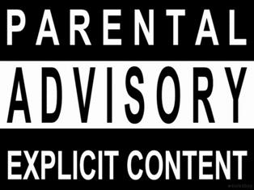

Almost seven years ago, Ryan a.k.a. Barack Odrama a.k.a. The Dalai Drama started working at Hall and Partners, a marketing research firm. His manager, McKenzie, was a big music fan, but did not like rap music. A former hip-hop DJ, Ryan set out to change McKenzie's mind about the genre. He created a mixed CD (because CDs were still the medium of choice) with ten of his favorite rap songs, along with a description of each song's history, lyrics, and significance. McKenzie thanked Ryan for the CD, but didn't mention it again... Fast forward five years, and McKenzie and Ryan had become great friends. McKenzie invited Ryan over for Thanksgiving dinner, and to Ryan's great surprise and delight, the soundtrack to dinner was the CD he had made for McKenzie years earlier! The goal of this project is to help non-rap fans develop an appreciation for the genre, just as Ryan helped open McKenzie's eyes to rap music years ago. Welcome!
Played primarily Hip-Hop and R&B for almost 7 years at nightclubs in Montreal, QC
MBA student at Kellogg School of Management at Northwestern University
A year away from starting a new career in Chicago